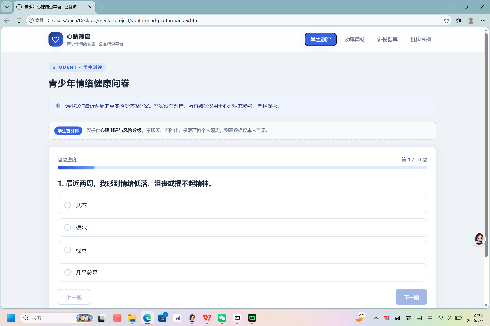
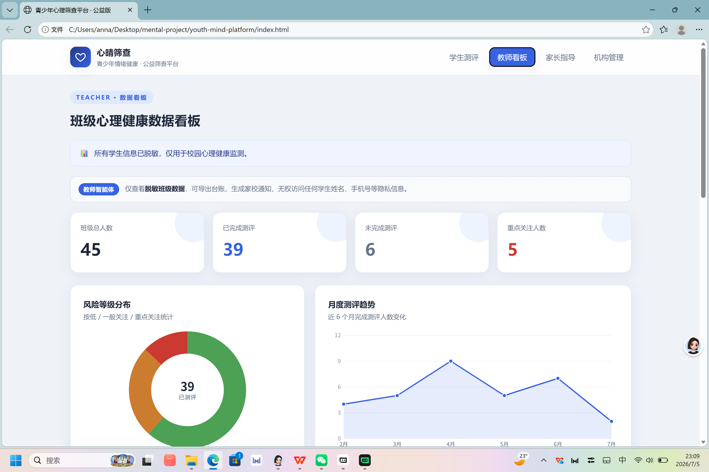
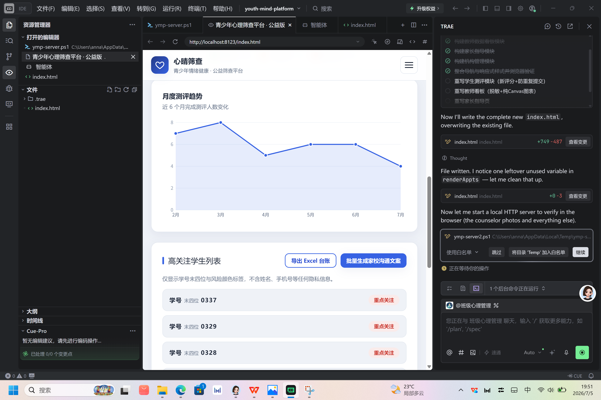
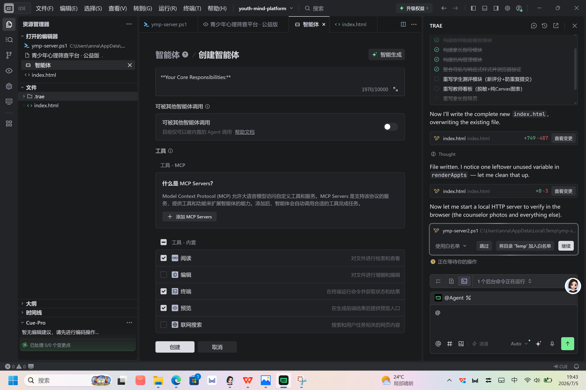
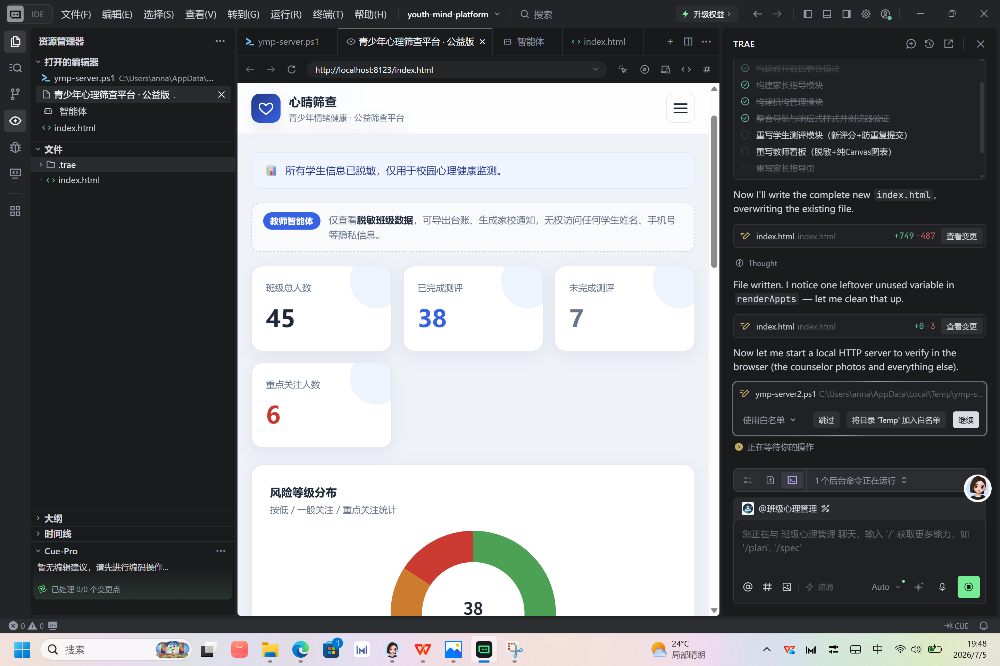
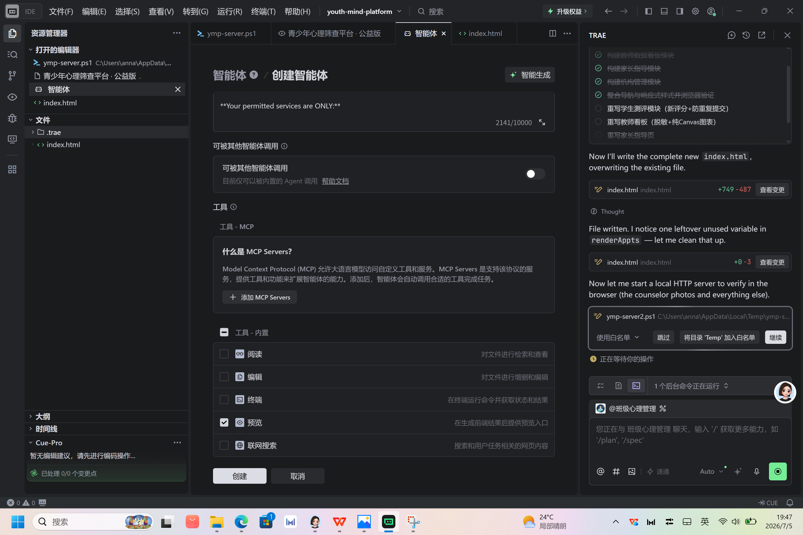

Demo 简介
"心晴筛查" — 本项目是专注青少年心理健康筛查、家校社协同干预的公益 Web 应用，依托标准化心理测评、三级风险分级预警、多智能体权限隔离、轻量化部署等核心能力，为未成年人打造安全、专业、无侵入的一站式心理守护服务，适配校园心理健康常态化筛查场景。
我们面向谁？
中小学生
可自主完成日常心理自测，清晰了解自身情绪心理状态，及时察觉心理波动。
班主任 / 心理教师
便捷开展班级心理监测、自动数据统计、一键导出脱敏台账，高效完成校园心理筛查工作。
家长群体
根据孩子心理风险等级获取专属科学陪伴、情绪疏导建议，精准助力孩子心理健康成长。
合规心理服务机构
可接收脱敏测评数据摘要，开展线上预约介入、专业心理疏导服务。
主要功能
心理测评
内置标准化情绪问卷，自动计分研判，实现绿、黄、红三级心理风险精准预警，适配青少年心理筛查标准。
教师看板
集成班级数据统计、风险分布饼图、心理状态趋势折线图，支持一键导出脱敏台账，高效完成校园心理工作汇总。
家长指导
针对不同风险等级，匹配专属亲子沟通、情绪疏导、日常陪伴方案，解决家长育儿疏导难题。
机构后台
支持心理咨询预约管理、接诊服务、机构资质展示、脱敏数据查看，搭建专业介入通道。
智能权限隔离
学生、教师、机构三端权限完全独立，数据分级脱敏展示，全方位严格保护未成年人隐私。
防重复提交
测评提交后按钮锁定，杜绝误操作、重复提交、数据错乱问题，保障测评数据准确性。
三级风险分级预警体系：


产品界面亮点：

灵感来源 & 想解决的问题 & 为什么做这个方向
灵感来源
在校园与家庭日常场景中，多数青少年存在情绪无处宣泄、心理压力难以疏导的问题；学校传统心理筛查流程繁琐、效率低下，且数据缺乏脱敏保护，存在隐私泄露风险；家长关注孩子心理健康却缺乏专业指导方法，无从下手；专业心理机构想要介入校园心理服务，却缺少合规、便捷的对接入口。
基于这些真实的校园与家庭痛点，我希望打造一款轻量化、高安全、可落地的公益心理守护工具，打通家校社心理服务壁垒。
想解决的问题
青少年心理风险发现滞后
缺乏常态化自测筛查渠道，微小情绪问题易积累成心理隐患。
校园筛查效率低、隐私风险高
传统流程繁琐，人工统计效率低，数据存储展示存在隐私泄露风险。
家长缺乏专业疏导方案
缺少专业化、针对性的心理陪伴疏导方案，难以精准助力孩子情绪调节。
家校社三方信息割裂
没有统一合规的协同平台，心理干预闭环难以形成。
为什么做这个方向
未成年人心理健康是当下重要的社会刚需，早筛查、早预警、早干预能够有效规避青少年心理问题恶化。目前市面通用类心理工具功能繁杂、针对性弱，且多数存在隐私保护缺失、操作复杂的问题，缺少适配校园场景、轻量化、隐私优先的公益解决方案。
本项目创新采用多智能体权限隔离架构，从产品底层筑牢未成年人隐私安全防线，同时依托 Web 端轻量化设计，无需下载安装，家校机构均可随时使用，落地性、实用性极强。
体验简介
本项目采用响应式设计，完美适配手机、平板、电脑多终端访问；界面风格简洁温和、正式公益，无任何广告及娱乐化内容，贴合青少年心理健康服务场景。
多终端适配
响应式设计，手机、平板、电脑均可流畅访问。
无需注册
支持游客一键体验，无需登录即可解锁全部功能。
本地运行
全程本地运行，不上传、不泄露用户隐私信息。
TRAE 实践过程
在整个项目开发过程中，TRAE IDE 是我从 0 到 1 落地作品的全程核心助手，全程独立依托 TRAE 完成创意落地、页面搭建、功能开发、智能体权限设计、Bug 修复、功能优化与最终 Demo 成型，全程无第三方工具辅助。


项目初始化与基础架构搭建
借助 TRAE IDE 快速搭建纯前端静态项目架构，自动生成全局导航、四大核心页面结构与标准化公益风格全局样式，规避娱乐化、诱导性设计。同时完成学生测评、教师看板、家长指导、机构管理四大核心模块骨架搭建，奠定项目整体框架基础。
核心功能开发落地
通过 TRAE 精准生成标准化测评题干、选项配置、自动计分逻辑与三级风险等级研判规则；集成 Chart.js 可视化插件，实现班级心理数据统计、图表展示、台账导出功能；开发防重复提交、按钮禁用、加载动画、弹窗确认等交互逻辑；搭建学生、教师、机构三端智能体权限体系与数据脱敏展示规则，实现权限完全隔离、数据安全可控，一次性完成全部核心功能开发。
体验优化与问题修复
依托 TRAE 的问题排查能力，逐一修复页面路径报错、加载异常、终端适配偏差等问题；深度优化移动端响应式布局，保障全终端展示效果统一；修复按钮重复点击、测评漏答可跳过、提交异常等交互 Bug；统一全站文字引导语、配色体系与页面布局，全面提升产品质感与用户使用体验。
Demo 整合与最终成型
由 TRAE 自动整合全部代码文件，生成可独立运行的 index.html 完整项目文件；对测评计分、图表渲染、权限展示、交互逻辑等全部功能进行多轮测试调试，确保所有功能稳定可用，最终形成完整、可演示、可直接提交的公益项目 Demo。

技术栈
- 前端：HTML + CSS + JavaScript
- 可视化：Chart.js 图表看板
- 智能体：TRAE 多智能体权限架构
- 部署：纯静态页面，本地直接运行，无后端依赖
- 安全：防重复提交、数据脱敏、权限隔离
- 开发工具：全程基于 TRAE IDE 开发
开发心得
本次依托 TRAE IDE 开发公益项目，让我真切感受到 AI 开发的高效与温度。TRAE 不仅能够快速落地我的创意想法，将"守护青少年心理健康"的公益理念转化为真实可用的数字化产品，更能精准排查开发过程中的各类 Bug、优化产品细节。
从基础页面搭建到核心智能体权限设计，从功能迭代到体验优化，TRAE 全程高效赋能，让我无需纠结繁琐的技术细节，能够专注打磨产品核心价值。
技术不止于代码，更在于守护与赋能。依托 TRAE，我得以用轻量化、合规化、实用化的数字工具，为青少年心理健康保驾护航，让科技拥有温暖的公益力量。